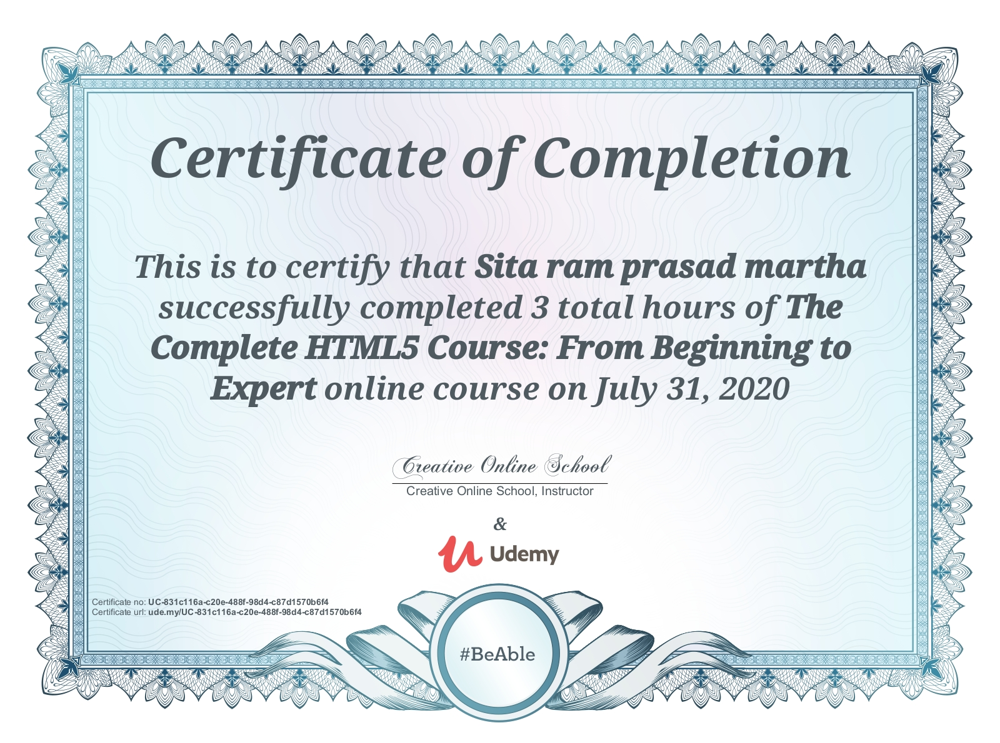
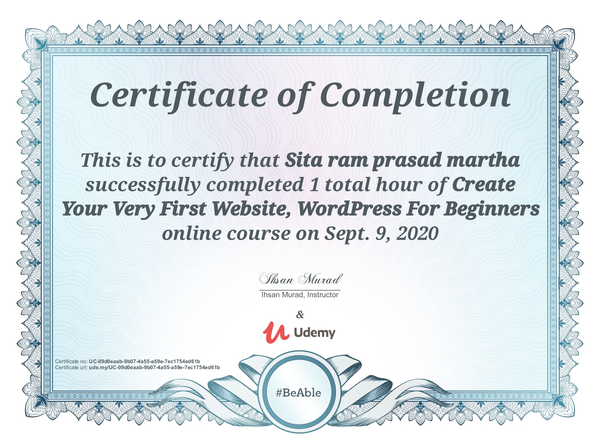

Building real-time, data-driven systems that bridge AI intelligence with intuitive user experiences.
I'm a Full Stack Python Developer with deep expertise in AI/ML, currently completing my MS in Computer Science at NC A&T State University (GPA: 3.79/4.0). I specialize in building end-to-end intelligent systems — from training custom computer vision models with PyTorch and YOLO to deploying real-time APIs with FastAPI and building responsive React dashboards.
My work spans autonomous detection systems, data-driven telemetry platforms, and AI-powered web applications. I'm actively seeking full-time opportunities in the USA starting January 2026.
NC A&T (2025)
Python/React/ML
NCDOT-funded platform featuring live telemetry, object detection, and streaming dashboard.
Secure coding environment with GPT-4 integration for automated bug detection and fixes.
DP-900 · Score: 833
Cisco ISTE Academy
Cisco Networking Academy · VJIT
Oracle Authorized Course
Google IT Support Program
Google IT Support Program
VMEdu · SSYB Professional

3 hrs · Creative Online School

1 hr · Ihsan Murad
North Carolina A&T researchers built AI software that detects deer, dogs, and other animals in both autonomous and manually operated vehicles — filling the gap where standard proximity sensors fall short. As the lead developer, I built the driving simulator and spearheaded the project at the Center for Regional and Rural Connected Communities, funded by the university and targeting commercial transportation partnerships.
sitaramprasadmartha@gmail.com
+1 3364051403
Greensboro, NC (Open to Relocation)
How would you like to chat?